RISD BArch Thesis Installation and Performance, May 2026
Thanks to the ground beneath my feet explores sound as a new media lens for the design of architecture, using speaker design and acous- tic intervention as a means for creating immersive ritual spaces. Drawing from sound system culture, Indigenous sonic practices, sound art and afrofuturism it engages with resonance and amplification as tools for ritual space-making while recognizing the ground as a carrier of layered Black and Indigenous histories. Sonic ap- ertures and openings into the earth become methods for activating these histories as living material for design. Operating between excavation and landscape, the work positions architecture as an instrument tuned to the ground, asking how sound can reconnect people to place, history, and futures em- bedded in the earth.
Reach out to me for a digital copy of my thesis book @ femi.fleming@gmail.com
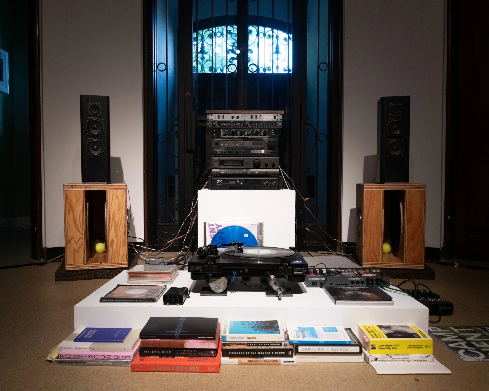
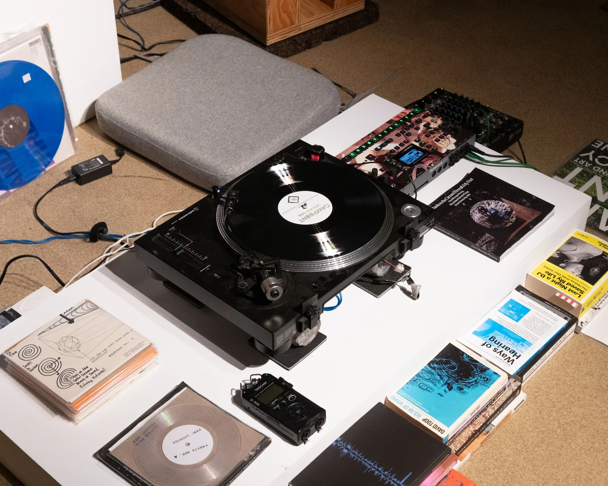
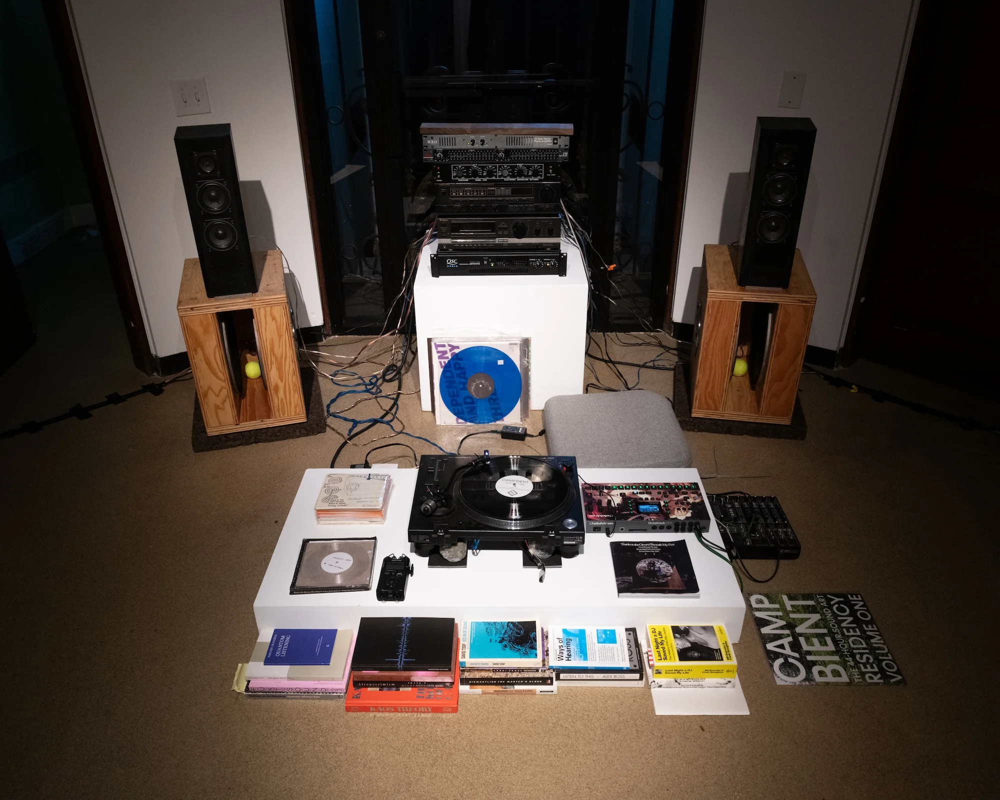
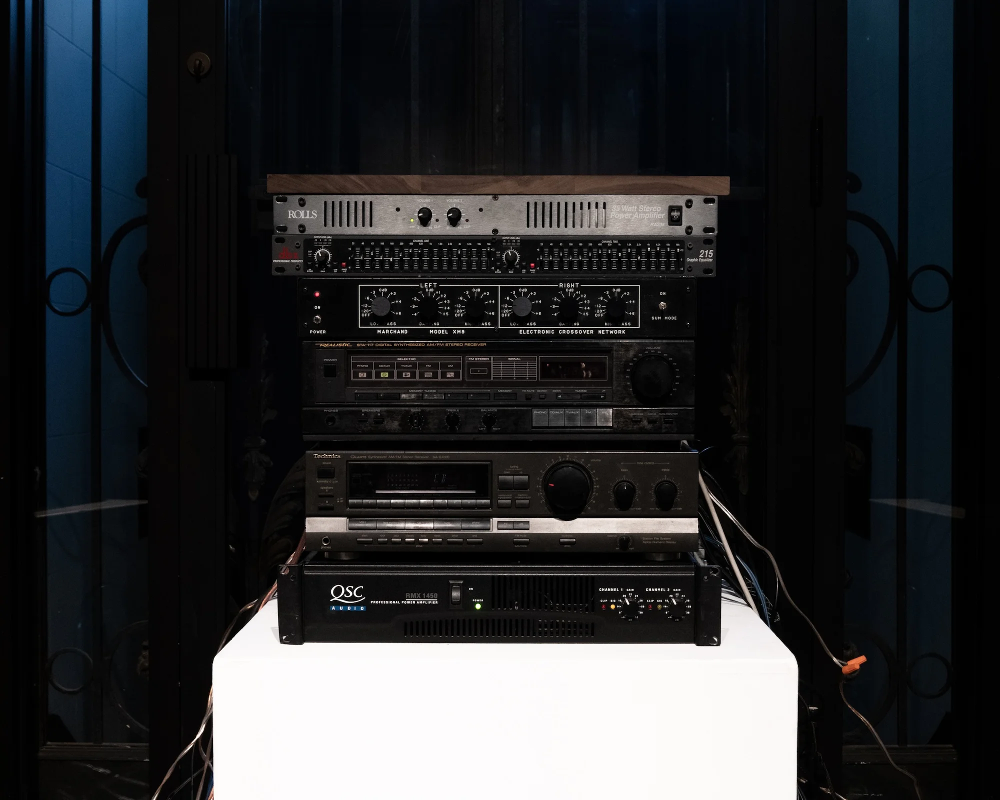
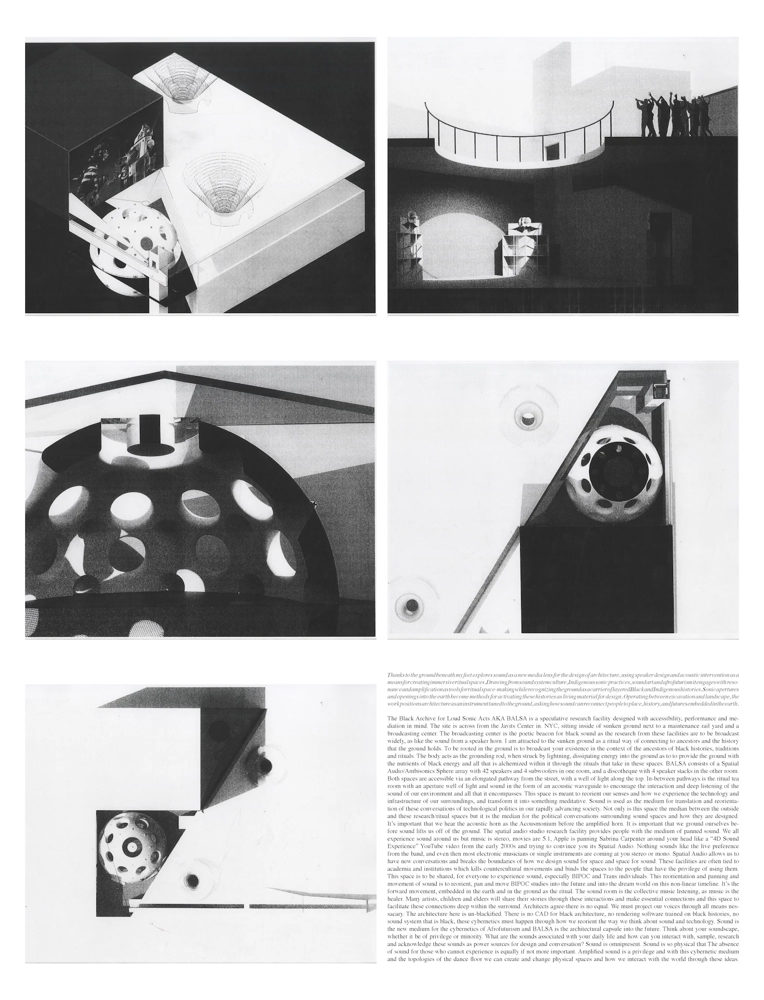
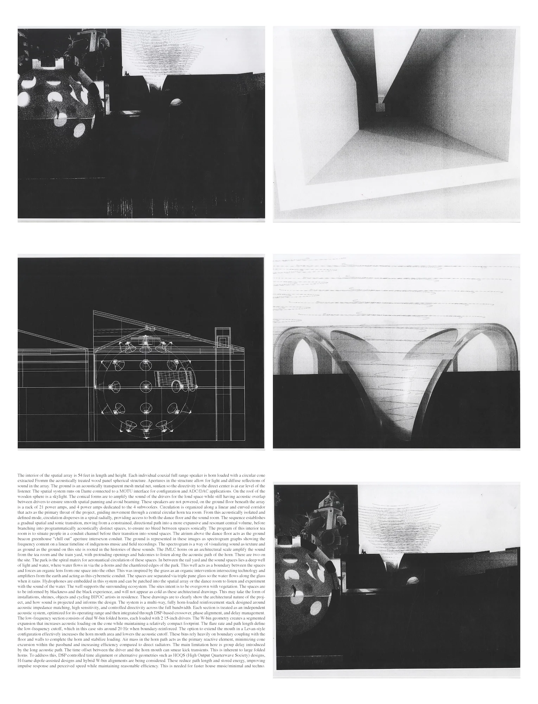
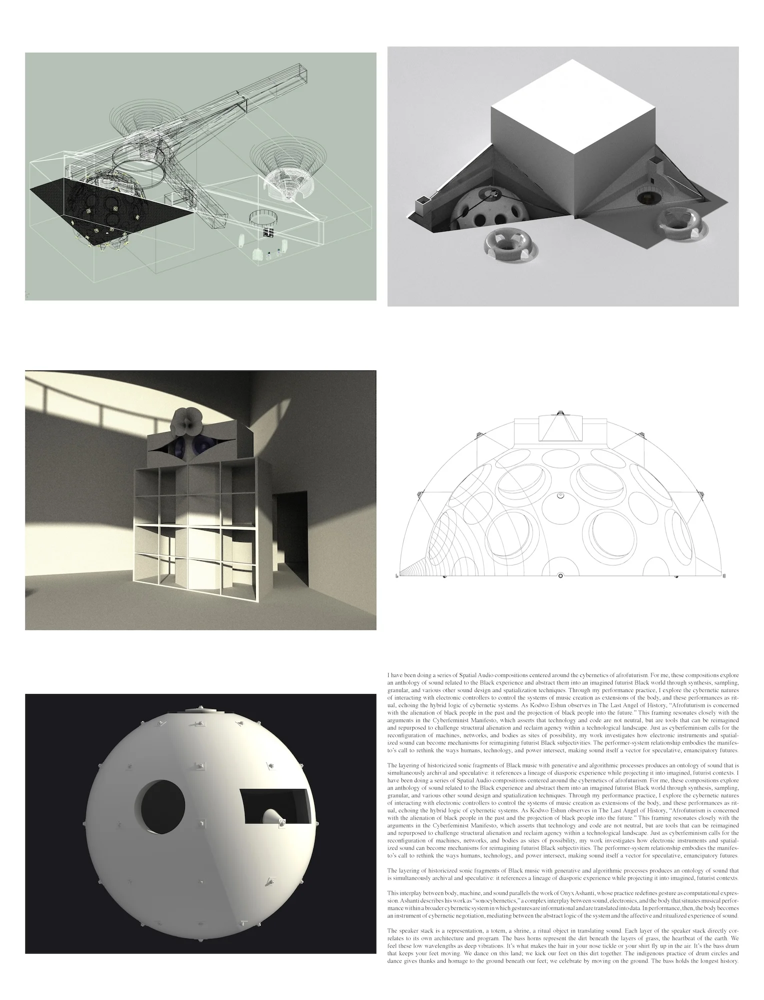
Listen to the Reference Vinyl Here!
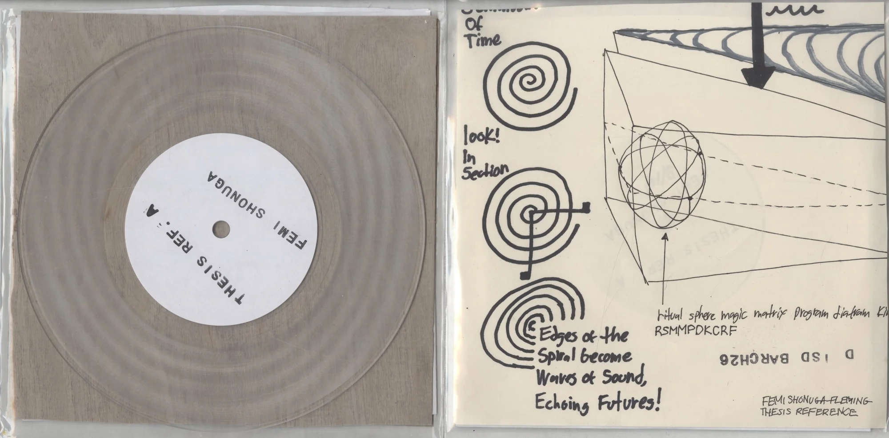
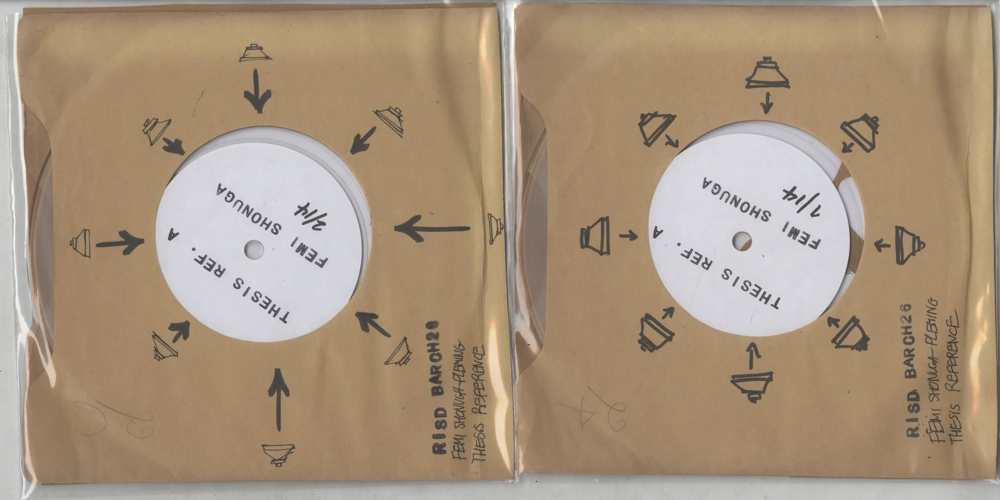
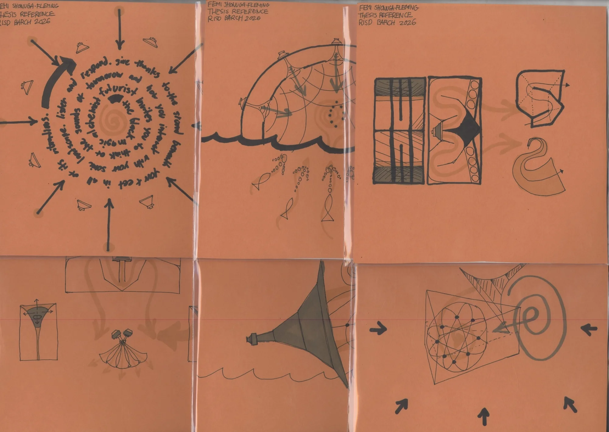
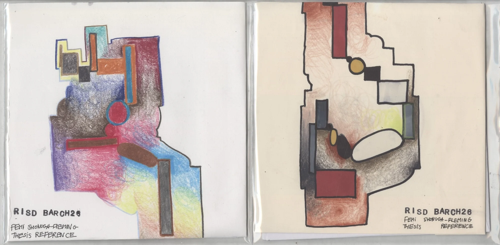
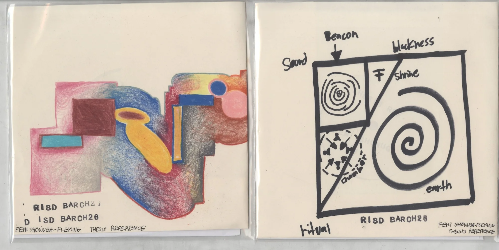
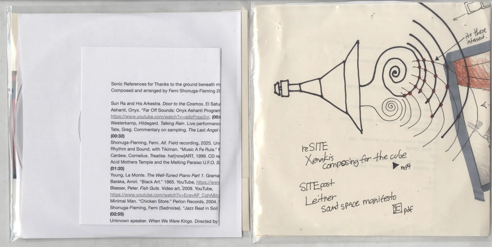
incoming ojas